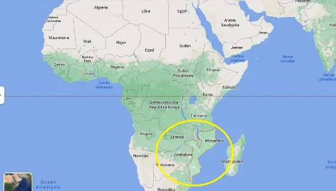

Mozambik (się) atakuje! Strzeżmy swych granic!
Oraz ważny news:„Talibowie zaproponowali Turcji kierowanie lotniskiem w Kabulu
W prasie mamy stałe punkty zapalne znane opinii publicznej i tak to leci od dziesiątek lat, a gdy się emocjonujemy kolejnym atakiem Izraela na cywilów w Palestynie niepostrzeżenie drożeje nam woda w kranie i po ciuchu, ale szybko rosną podatki…
Skoro tak, to po co nam jeszcze Mozambik w tym barszczu ? Afryka to dziś teren ekspansji Chin. USA oczywiście nie patrzy na to bez refleksji i tam, gdzie nie może sam eksploatować afrykańskiej ziemi robi co może, aby nikt inny tego nie robił.

Najlepsza do tego jest wojna domowa! W krajach islamskich idealny jest jakiś ruch radykalny, bo nic nie paraliżuje lepiej regionu i inwestorów niż doniesienie o 40 ściętych maczetami nastolatkach. Właśnie mamy takie zajścia w Mozambiku, ruch umownie określany jako lokalny ISIS zajął miasto portowe (Mocímboa da Praia) na północy tego oceanicznego i dużego kraju. Nitki prowadzą do Sudanu, czyli „piraci”. To grupy bojowe wynajmowane przez imperia do robienia zamieszania, gdy brakuje zleceń „zarabiają sami” np. porywając kontenerowiec. Ich ostatnie akcje to nie jest inicjatywa własna. Wnioskuje tak, bo mają sporo nowej dobrej broni a to nie są ludzie rozrzutni. Mozambik jest tak daleko, że „nie wiadomo gdzie”, ale szybko zobaczymy na naszych ulicach ciemne twarze emigrantów z tego regionu jeśli nie będziemy robili tego, co robić trzeba: strzec swych granic!
Z ostatniej chwili: „Talibowie zaproponowali Turcji kierowanie lotniskiem w Kabulu”
Talibowie zaproponowali Turcji kierowanie lotniskiem w Kabulu
Czyli „Chińczyki trzymają się mocno!” ;)
Paweł Klimczewski